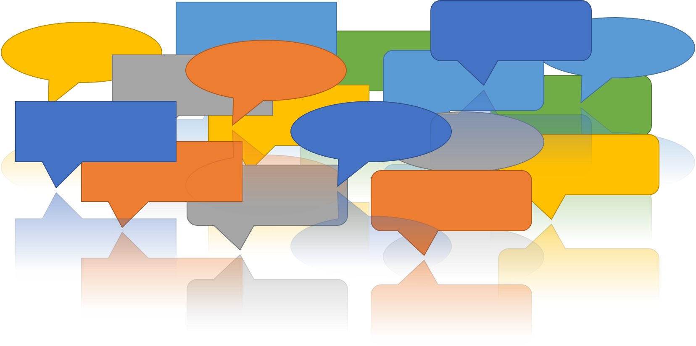
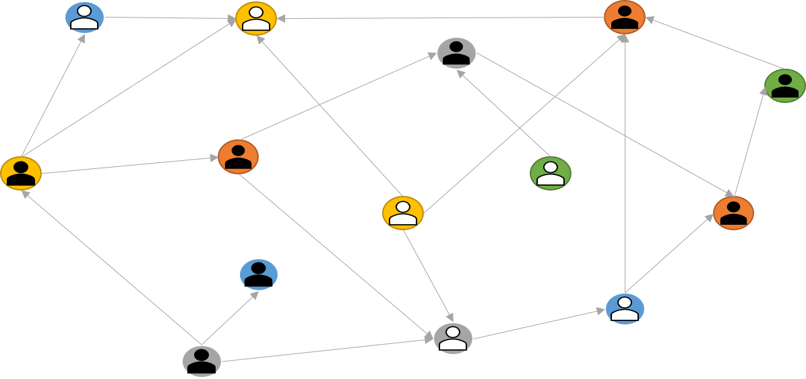

<!DOCTYPE html>
<html>

<head>
    <meta name="viewport" content="width=device-width, initial-scale=1.0">
    <title>Mahmood Jasim</title>
    <link rel="stylesheet" href="https://maxcdn.bootstrapcdn.com/bootstrap/4.0.0/css/bootstrap.min.css"
        integrity="sha384-Gn5384xqQ1aoWXA+058RXPxPg6fy4IWvTNh0E263XmFcJlSAwiGgFAW/dAiS6JXm" crossorigin="anonymous">
</head>

<link rel="stylesheet" href="https://maxcdn.bootstrapcdn.com/bootstrap/4.5.2/css/bootstrap.min.css">
<script src="https://ajax.googleapis.com/ajax/libs/jquery/3.5.1/jquery.min.js"></script>
<script src="https://cdnjs.cloudflare.com/ajax/libs/popper.js/1.16.0/umd/popper.min.js"></script>
<script src="https://maxcdn.bootstrapcdn.com/bootstrap/4.5.2/js/bootstrap.min.js"></script>
<link rel="stylesheet" href="https://cdnjs.cloudflare.com/ajax/libs/font-awesome/4.7.0/css/font-awesome.min.css">

</html>

<style>
    a,
    a:hover,
    a:focus,
    a:active {
        text-decoration: none;
        color: inherit;
    }

    * {
        font-size: 18px;
    }

    .nav-link:after {
        display: block;
        content: '';
        border-bottom: solid 3px #50ABF1;
        transform: scaleX(0);
        transition: transform 250ms ease-in-out;
    }

    .nav-link:hover:after {
        transform: scaleX(1);
    }

    .publication {
        margin-bottom: 2%
    }

    .card:after {
        display: block;
        content: '';
        border-bottom: solid 3px #50ABF1;
        border-radius: 10px;
        transform: scaleX(0);
        transition: transform 250ms ease-in-out;
    }

    .card:hover:after {
        transform: scaleX(1);
    }

    .publication:hover {
        color: #50ABF1;
        cursor: pointer
    }

    .navbar-text:after {
        display: block;
        content: '';
        border-bottom: solid 3px #50ABF1;
        transform: scaleX(0);
        transition: transform 250ms ease-in-out;
    }

    .navbar-text:hover:after {
        transform: scaleX(1);
    }
</style>

<body style="background-color: #1E1E1E; margin-bottom:50px; border-bottom: solid thin #50ABF1">
    <div class="container">
        <nav class=" navbar navbar-expand-lg navbar-dark" style="background-color: #1E1E1E;">
            <button class="navbar-toggler" type="button" data-toggle="collapse" data-target="#mynavbar"
                aria-controls="mynavbar" aria-expanded="false" aria-label="Toggle navigation">
                <span class="navbar-toggler-icon"></span>
            </button>
            <div class="collapse navbar-collapse" id="mynavbar">
                <ul class="navbar-nav mr-auto mt-2 mt-lg-0">
                    <li class="nav-item active">
                        <a class="nav-link" style="font-weight: bolder;margin-right:100px" href="index.html">Mahmood
                            Jasim<span class="sr-only">(current)</span></a>
                    </li>
                    <li class="nav-item">
                        <a class="nav-link active" href="projects.html">Projects</a>
                    </li>
                    <li class="nav-item">
                        <a class="nav-link" href="publications.html">Publications</a>
                    </li>
                    <li class="nav-item">
                        <a class="nav-link" href="Mahmood_Jasim_CV.pdf">CV</a>
                    </li>
                </ul>
                <span class="navbar-text">
                    <a href="mailto:mjasim@cs.umass.edu"><i class="fa fa-envelope" aria-hidden="true"
                            style="margin:5px; color:#50ABF1"></i></a>
                </span>
                <span class="navbar-text">
                    <a href="https://scholar.google.com/citations?user=M9M5SdwAAAAJ&hl=en&oi=ao"><i
                            class="fa fa-graduation-cap" aria-hidden="true" style="margin:5px; color:#50ABF1"></i></a>
                </span>
                <span class="navbar-text">
                    <a href="https://twitter.com/mjasimcs"><i class="fa fa-twitter" aria-hidden="true"
                            style="margin:5px; color:#50ABF1"></i></a>
                </span>
                <span class="navbar-text">
                    <a href="https://github.com/mjasim"><i class="fa fa-github" aria-hidden="true"
                            style="margin:5px; color: #50ABF1"></i></a>
                </span>
                <span class="navbar-text">
                    <a href="https://www.linkedin.com/in/mahmood-jasim-67691321"><i class="fa fa-linkedin"
                            aria-hidden="true" style="margin:5px; color: #50ABF1"></i></a>
                </span>
            </div>
        </nav>
    </div>

    <div class="container"
        style="color:#50ABF1; margin-top: 30px; display:flex; flex-direction:row; justify-content:space-between; padding-left:4%; padding-right:4%;">
        <div>
            <h5>Projects<h5>
        </div>
    </div>


    <div class="container" id="projectrow1" style="padding-left:4%; padding-right:4%; color:white">
        <div class="card-deck">
            <div class="card" style="background-color: black;">
                
                <div class="card-body">
                    <h5 class="card-title">CommunityClick</h5>
                    <p class="card-text">In this project, we created CommunityClick, an interactive system to capture
                        and report community
                        feedback to increase inclusivity in town halls.</p>
                </div>
            </div>
            <div class="card" style="background-color: black;">
                
                <div class="card-body">
                    <h5 class="card-title">Community Input Understanding</h5>
                    <p class="card-text">In this project, we aim to study and design technological interventions to
                        enable
                        civic leaders to analyze community-generated input.
                    </p>
                </div>
            </div>
            <div class="card" style="background-color: black;">
                
                <div class="card-body">
                    <h5 class="card-title">RisingEMOTIONS</h5>
                    <p class="card-text">RisingEMOTIONS is a collaborative art project with East Boston community
                        members to
                        visualize projected flood levels and people’s emotions about climate change.</p>
                </div>
            </div>
        </div>
        <div>
            <br>
        </div>
    </div>

    <div class="container" id="projectrow2" style="padding-left:4%; padding-right:4%; color:white">
        <div class="card-deck">
            <div class="card" style="background-color: black;">
                
                <div class="card-body">
                    <h5 class="card-title">Serendipity and Decision-Making</h5>
                    <p class="card-text">In this project, we explore how people make decisions based on online text
                        information and how can
                        serendipitious information help make better decisions.</p>
                </div>
            </div>
            <div class="card" style="background-color: black;">
                
                <div class="card-body">
                    <h5 class="card-title">Visual Social Media</h5>
                    <p class="card-text">In this project, we study how can we use visualizations to
                        personalize social media interactions and exploration to go beyond algorithmic restrictions.
                    </p>
                </div>
            </div>
            <div class="card" style="background-color: black;">
                
                <div class="card-body">
                    <h5 class="card-title">Chatbot Personality</h5>
                    <p class="card-text">In this project, we investigate how chatbot personalities affect user
                        engagement
                        when extracting sensitive and critical personal information and how to design chatbots to
                        achieve
                        such purpose.</p>
                </div>
            </div>
        </div>
        <div>
            <br>
        </div>
    </div>

</body>